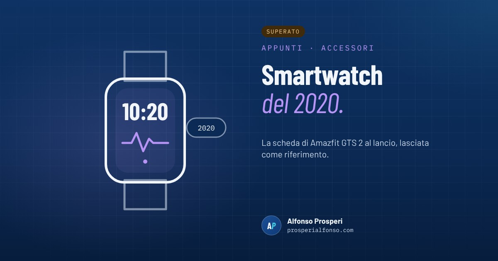

Questo articolo raccontava lo smartwatch Amazfit GTS 2 al suo arrivo in Italia, nell'ottobre 2020. Lo lasciamo come riferimento.
Amazfit GTS 2 era stato presentato in Cina il 22 settembre 2020 insieme ad Amazfit GTR 2, come successore di Amazfit GTS. Puntava a chi voleva spendere poco senza rinunciare a uno smartwatch completo.
- Display AMOLED rettangolare da 1,65 pollici, risoluzione 348 x 442, luminosità 450 nit.
- Batteria da 246 mAh: secondo il produttore circa 7 giorni con uso normale e 20 in risparmio energetico, con ricarica in 2 ore.
- Sensori e connessioni: sensore cardiaco BioTracker 2, Bluetooth 5.0, NFC per i pagamenti, Wi-Fi a 2,4 GHz, accelerometro, giroscopio, sensore geomagnetico e di luminosità. 4 GB di memoria interna.
- Salute e sport: 12 modalità di allenamento, sistema PAI, misurazione dell'ossigeno nel sangue (SpO2), battito cardiaco 24 ore su 24, passi e qualità del sonno.
- Altro: resistenza all'acqua 5 ATM, compatibilità con Android e iOS, assistente vocale, altoparlante e microfono per rispondere alle chiamate.
- Design: cassa in alluminio da 42,8 x 35,6 x 9,7 mm, 24,7 grammi, cinturino in silicone da 20 mm, in nero, argento e oro.
In Italia era stato presentato il 27 ottobre 2020 al prezzo ufficiale di 169,90 euro.